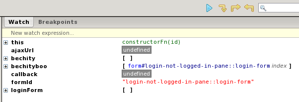

AJAX and RSF#
RSF works well with AJAX and Javascript (either together with client-side frameworks or as bits of Javascript you write yourself). Because RSF is designed to work in a standard RESTful way it does not require or use Javascript for navigation, posting data, or any framework activities. This is notable because it is in contrast to the way many other Java web frameworks operate.
Developers can choose to use RSF Javascript libraries for widgets, validation (eventually), and other specialized built-in RSF actions, but these are optional and are only used to enhance the user experience.
and Javascript (either together with client-side frameworks or as bits of Javascript you write yourself). Because RSF is designed to work in a standard RESTful way it does not require or use Javascript for navigation, posting data, or any framework activities. This is notable because it is in contrast to the way many other Java web frameworks operate.
Developers can choose to use RSF Javascript libraries for widgets, validation (eventually), and other specialized built-in RSF actions, but these are optional and are only used to enhance the user experience.
There are multiple ways to use AJAX in RSF which are detailed below. We highly encourage looking at the sample apps for examples of AJAX in RSF as a complement to this page. The sample applications are heavily commented and in many cases offer better explanations of how things work.
Returning a simple JSON payload#
To define an RSF view which returns a simple JSON payload, encoded from a set of Java objects, use a DataView. DataViews can also return other kinds of non-markup content types (images, PDF files, etc.).
UVB shortcut (Recommended where a markup-based approach is not appropriate - see below)#
RSF provides a special producer called the Universal View Bus (or UVB for short). When this is combined with the RSF Javascript library (rsf.js) it allows a developer to make AJAX requests with minimal programming effort - in particular with no new request-handling code on the server-side.
Using UVB to handle an AJAX request and response cycle#
- In your template, create a form and a field which we will use to put data in to send along in the AJAX request, you could use any type of field you like to hold data but the field does have to be placed inside a form:
<form rsf:id="input_form" style="display:inline;"> <input rsf:id="input_field" id="input_field" type="text" size="20" maxlength="20" /> </form> <div id="result_field"></div>
- Remember to write the client-side XML id id="input_field" on this element as well as the rsf:id to ensure that the RSF renderer writes a client side id when it rewrites the element. We will need the XML id later when we refer to the element via Javascript. (The id you write in the markup need not agree with RSF's id, but if you want to write a preview function call in place of the comment below, you can use this id there).
- In your template, create a placeholder <script> tag which will hold the call to your init method, this will allow you to pass information from the server to the Javascript, such as the IDs for the fields controlled by RSF, as well as the EL bindings
<script rsf:id="init_js" type="text/javascript">
// a real function call with real values which come from the
// "emitJavascriptCall" method will be placed here by RSF
</script>
(Note that you can write an actual function call here in the markup too, to set up an environment that would let you preview your dynamic behaviour from your template file in the filesystem)
- In your my-app.js file (may need to create one), create an init method to set up for an AJAX request. This method should take params which include elBindings and fieldIds for RSF controlled fields (e.g. input)
- Use the getAJAXUpdater function to create a trigger function
- Attach that trigger function to events or just run it yourself
function initMyAjaxStuff(fieldId, elBinding) {
// get the field we are working with
var inputField = document.getElementById(fieldId);
// get the URL from the form
var ajaxUrl = inputField.form.action;
var callback = function(results) {
// this function (callback) defines what to do
// when the ajax response is received,
// the response will be placed in the "results" variable
// result.EL is a map of ELbinding -> JS Object
var resultField = document.getElementById("result_field");
// get out the object (which is a string array in
// this case) and decode it
var resultArray = RSF.decodeRSFStringArray(results.EL[elBinding]);
// output the array on the screen
resultField.innerHTML = resultArray;
}
// setup the function which initiates the AJAX request
var updater = RSF.getAJAXUpdater([inputField], ajaxUrl, [elBinding], callback);
// setup the input field event to trigger the ajax request function
inputField.onchange = updater; // send request when field changes
}
- Remember to add your my-app.js file to your template
<script type="text/javascript" language="JavaScript" src="../js/my-app.js"></script>
- In your producer, pass the UVB Producer URL into the DOM so that it can be accessed by your Javascript and used as the target for the AJAX request. In this example we are putting the URL in the form action:
UIForm form = UIForm.make(tofill, "input_form"); // this puts the URL to the UVB producer in the form so we can get to it form.viewparams = new SimpleViewParameters(UVBProducer.VIEW_ID);
- In your producer, use a UIInitBlock to pass the needed data (fieldIds, elBindings, etc.) from the producer (server) to the template javascript (client) while triggering the init method, in this example we are showing how to get the full ID of an RSF controlled field (first param) and also pass along an EL binding (second param)
UIInput inputfield = UIInput.make(form, "input_field", "myAjaxBean.search");
UIInitBlock.make(tofill, "init_js", "initMyAjaxStuff", new Object[] {inputfield, "myAjaxBean.results"});
- This init block will generate a Javascript call in the output XHTML that looks like:
initMyAjaxStuff("input_field", "myAjaxBean.results");
- Note that if you really need for some reason to take control of the rendering of the Javascript call, you can instead use the RSF utility call HTMLUtil.emitJavascriptCall which is what the UIInitBlock renderer uses internally. However you are generally recommended not to mix the client-side and server-side worlds by explicitly bashing together Javascript code in Java, unless you absolutely need to.
- Create a bean which will do the processing when it receives the parameters from the AJAX request (this is just a standard bean), if you are sending more than one ajax request value then you will have to trigger the handleAjaxCall method in another way, see the Sample RSF apps for examples
public class AjaxHandlerBean {
public String search;
private String[] results;
public String[] getResults() {
handleAjaxCall();
return results;
}
public void handleAjaxCall() {
if (search == null || search.equals("")) {
// this should not happen so die here
throw new RuntimeException("Blank AJAX search");
} else {
// make an array of stuff to return
results = new String[] {search,"aaron","is","totally","cool"};
}
}
}
- Add the AjaxHandlerBean definition to the requestContext.xml file
<bean id="myAjaxBean"
class="uk.org.ponder.rsf.ajax.autocomplete.AjaxHandlerBean">
</bean>
- Add the id of your AJAX handler bean (myAjaxBean) to the list of request addressible beans (with requestAddressibleParent) in your applicationContext.xml file, this is needed so that UVB can write data into the the bean
<bean parent="requestAddressibleParent"> <property name="value" value="myAjaxBean" /> </bean>
- You should be able to start up your application and change the field to trigger an AJAX request which should return an array from the server which has the search string in it (yes, completely pointless but it illustrates the cycle), then the value will be placed in the <div>
What if I just want to trigger a method on the server using an AJAX request and do not want to pass any values?#
This is exactly the same as the code demonstrated above, just change the following:
- Leave off the search property (public String search;) from the AJAX handler bean
- Don't pass an inputField when calling the emitJavascriptCall method (only pass the EL binding)
- Change the initMyAjaxStuff function to only use one param
function initMyAjaxStuff(elBinding) {
- Change the call to the getAJAXUpdater to leave out the input fields
var updater = RSF.getAJAXUpdater([], ajaxUrl, [elBinding], callback);
What if I don't care about the results of the AJAX request?#
This is exactly the same as the code demonstrated above, just change the following:
- Do not bother returning a real result, just return empty string from the AJAX handler bean
public String getResults() {
handleAjaxCall();
return "";
}
- Change the callback method to not do anything var callback = function(results) { } , you may want to still check to see if there were failures during the call by looking at results.isError
Sample application#
There is a sample RSF application which demonstrates everything shown above in SVN at: https://saffron.caret.cam.ac.uk/svn/projects/RSFSamples/trunk/AjaxAutocompleteSimple/
AJAX handler view#
"Semantic" AJAX, or XML views#
This will be the method that is most similar to the standard way AJAX is manually handled in a webpage, where there is no special framework support. It involves creating a view producer which will be the target for your AJAX requests and an xml template to control the layout. When this producer is triggered (by an AJAX request) it will (possibly) receive ViewParameters which contain the data being passed in (you are responsible for choosing how to encode and decode any data you are passing in your request). It will then work like a normal view producer and template combination and the data will be placed into the template based on the rsf:ids in the template. Then the XML will be sent back via an AJAX response. This requires the most manual work but provides for as much flexibility as you need. In this case your producer should implement ContentTypeReporter and return the value ContentTypeInfoRegistry.AJAX. Give your template a .xml extension. In views like this you will generally use the components UIOutput, UIVerbatim and UIBranchContainer.
Markup-driven AJAX, or HTML views#
It is also very easy to create a view rendering an HTML fragment, for use with an AHAH strategy. Simply create a template for the markup fragment you want, and write a producer using all the usual RSF components. For views like this you will implement ContentTypeReporter and return the value ContentTypeInfoRegistry.HTML_FRAGMENT
Custom responses#
For stepping outside the RSF rendering system completely, you can register a custom request handler using a HandlerHook - this can render any kind of response at all, since it takes manual control of the HttpServletResponse or other environment. The drawback of this approach is that your application will not be portable to non-Servlet environments.AJAX frameworks#
RSF fully supports the use of AJAX frameworks and has been tested with the following frameworks:
- jQuery
- Dojo Toolkit
- Yahoo! UI Library (YUI) - used in the RSF data picker widget
If the framework allows you to construct your own AJAX requests then you can use the UVB shortcut and simply pass the data back to the framework once UVB gives you the AJAX response. If not, then you will have to make as AJAX handler view to process the requests from your framework (the framework would then handle the responses for you). This is often an attractive option as it takes the most advantage of the AJAX framework but it does require extra work.
We recommend you avoid AJAX frameworks that pollute the global namespace or extend the core Javascript objects. Using frameworks like this will cause your app to not play nicely in portlet environments or other environments where the javascript ends up being shared between apps. Unfortunately, this includes any frameworks that use prototype (more info on the prototype extensions.
jQuery usage note#
I (jmarca) have found that jQuery does not like the ids that are generated automatically by RSF. As noted in the jQuery FAQ, jQuery chokes on characters that have a meaning in CSS, as it uses CSS selectors to do some fancy DOM searching. To prove this, I put the following code in my javascript. In the example, "formId" is created more or less following the LogonTest example
constructorFn.initLogin=function(formId) {
// get the field we are working with
var loginForm = jQuery("#"+formId);
var bechity = jQuery("#login-not-logged-in-pane::login-form");
var bechityboo = jQuery("#login-not-logged-in-pane\\:\\:login-form");
...
If you run this in Firefox with Firebug enabled, you will see the following output as you step over these lines:

I don't know how to solve this problem in Java, but my Javascript solution is as follows:
constructorFn.initLogin=function(formId) {
// jQuery chokes on colons
var formIdNoColon = formId.replace(/(\:)/g,"\\$1");
// get the field we are working with
var loginForm = jQuery("#"+formIdNoColon);
...
Add new attachment
List of attachments
| Kind | Attachment Name | Size | Version | Date Modified | Author | Change note |
|---|---|---|---|---|---|---|
png |
screenshot.png | 25.3 kB | 1 | 18-Mar-2008 16:11 | JamesMarca |
{kind=link}
{kind=link}
Documentation
Developers
Javadocs
Designers
Sample RSF Apps
Presentations
Acronyms
Downloads
Current Release
Trunk
Distributions
Old Versions
Community
Q&A
Forums
Mailing Lists
Issue Tracker
People
Design
Roadmap
Integrations
Concepts
Philosophy